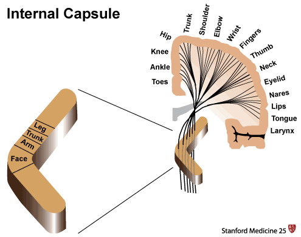

本ページで使用する略語一覧
| MCA | middle cerebral artery — 中大脳動脈 |
| ACA | anterior cerebral artery — 前大脳動脈 |
| AChA | anterior choroidal artery — 前脈絡叢動脈 |
| UMN | upper motor neuron — 上位運動ニューロン |
SECTION 1 内包とは — 位置と隣接構造
白質構造に高密度集積する運動・感覚線維
内包（internal capsule）は、大脳皮質と脊髄・脳幹をつなぐ運動・感覚線維が高密度に集中する白質構造である。この場所はきわめてコンパクトな領域に大量の線維が通過するため、小さな梗塞であっても顕著な神経症状をきたす。逆を言えば、内包梗塞に特徴的な臨床所見を理解することで、身体診察のみから病変の局在を同定することが可能となる。
皮質下構造の中の内包
内包は脳の皮質下構造（subcortical structures）の一つである。内包の周囲には尾状核・被殻・淡蒼球・視床・脳幹が存在する。内包は解剖学的に次のように位置する：
- 前脚（anterior limb）：尾状核とレンズ核（被殻＋淡蒼球）の間を隔てる
- 後脚（posterior limb）：視床とレンズ核の間を隔てる
SECTION 2 線維構成と機能局在（前脚・膝部・後脚）
3つの区域それぞれを通る線維
内包は通過する線維の種類によって機能局在が異なる3つの区域に分けられる。この局在を理解することで、梗塞の部位から臨床症状を予測し、逆に臨床症状から梗塞部位を推定できる。
| 区域 | 通過する線維 | 走行経路 |
|---|---|---|
| 前脚 Anterior limb |
前頭橋路線維（frontopontine fibers） 視床皮質線維（thalamocortical fibers） |
前頭皮質 → 橋 視床 → 前頭葉 |
| 膝部 Genu |
皮質延髄路線維（corticobulbar fibers） | 皮質 → 脳幹 |
| 後脚 Posterior limb |
皮質脊髄路線維（corticospinal fibers） 感覚線維（sensory fibers） |
皮質 → 脊髄 感覚上行路 |

後脚の体性局在（somatotopic organization）
後脚の皮質脊髄路は体性局在を維持して走行している。図に示すとおり、後脚には顔面（Face）・上肢（Arm）・体幹（Trunk）・下肢（Leg）の線維が局在する。このため後脚に小さな梗塞が生じるだけで、顔・腕・体幹・下肢を一括して障害する純粋運動性脳卒中が成立する。
SECTION 3 血管支配
レンズ核線条体動脈が主要な栄養血管
内包の大部分は中大脳動脈（MCA）の穿通枝であるレンズ核線条体動脈（lenticulostriate arteries）によって灌流される。レンズ核線条体動脈は小口径の穿通血管（small penetrating blood vessels）であり、内包を含む大多数の皮質下構造に血流を供給している。この細い穿通枝の閉塞がラクナ梗塞の主な機序となる。
| 区域 | 主な栄養血管 | 補足 |
|---|---|---|
| 前脚 | MCA のレンズ核線条体動脈（主） ACA の分枝（一部） |
MCA 穿通枝が大半を担う |
| 膝部 | MCA のレンズ核線条体動脈 | |
| 後脚 | MCA のレンズ核線条体動脈 ＋ 前脈絡叢動脈（AChA） |
AChA は内頸動脈から分枝し 後脚を補完的に灌流する |
SUMMARY 第1章のキーメッセージ
SECTION 1 純粋運動性脳卒中（Pure Motor Stroke）
最頻出のラクナ梗塞症候群
内包梗塞の最も代表的な臨床像が純粋運動性脳卒中（pure motor stroke）である。顔面・上肢・下肢の運動麻痺が感覚障害を伴わずに出現する。これはラクナ梗塞（lacunar infarct）の代表的なタイプの一つであり、内包梗塞による純粋運動性脳卒中はラクナ症候群の中で最も頻度が高い（most common lacunar syndrome）。
症状は顔面（face）・上肢（arm）・下肢（leg）のいずれか、または全てに及ぶ対側の運動麻痺として現れる。後脚の体性局在（Face・Arm・Trunk・Leg の配列）が、この三肢に及ぶ麻痺パターンの解剖学的基盤となっている。
SECTION 2 上位運動ニューロン（UMN）徴候
UMN 障害を示す5つの所見
内包は皮質脊髄路を含む UMN 経路であるため、梗塞により以下の上位運動ニューロン徴候が出現する。急性期は弛緩性麻痺として現れ、亜急性期以降に痙縮・反射亢進へと移行することが多い。
Hyperreflexia
Babinski sign
Hoffman sign
Clonus
Spasticity
SECTION 3 感覚運動混合型脳卒中（Mixed Sensorimotor Stroke）
後脚梗塞で運動麻痺＋感覚障害が合併する
内包後脚には運動線維（皮質脊髄路）と感覚線維の両方が走行しているため、後脚の梗塞は運動麻痺だけでなく感覚障害も引き起こしうる。上肢・体幹・下肢の運動線維と感覚線維が集中する後脚が障害されると、対側の運動麻痺と対側の感覚障害が同時に出現する（感覚運動混合型脳卒中）。
診察で運動症状（weakness）と感覚症状（±）の両者を確認することにより、内包のどの線維が関与しているかを臨床的に推定できる。
SECTION 4 皮質梗塞との鑑別
小さな内包梗塞か、広範な皮質梗塞か
上肢と下肢の両方に運動麻痺をきたす患者では、小さな内包梗塞と広範な ACA＋MCA 皮質梗塞の両方が鑑別に挙がる。皮質では下肢の運動野を ACA が、上肢の運動野を MCA が栄養しているため、両肢に麻痺が及ぶには両動脈領域にわたる広汎な皮質障害が必要となる。
しかし皮質が障害されると、皮質下構造のみの梗塞では通常みられない皮質徴候（cortical signs）が伴う。これらの皮質徴候の有無が内包梗塞と皮質梗塞を鑑別する最重要ポイントである。
以下の「皮質徴候」が1つでもあれば → 皮質梗塞を疑う（内包梗塞ではない）
- 眼球偏倚・注視偏向（gaze preference / gaze deviation）
- 失語症（expressive or receptive aphasia）
- 視野障害（visual field deficits）
- 視覚的・空間的無視（visual or spatial neglect）
「皮質徴候がない」ことが内包梗塞の特徴
| 所見 | 内包梗塞 | 皮質梗塞 |
|---|---|---|
| 運動麻痺 | 顔・腕・下肢の同側性 | あり |
| 感覚障害 | 純粋運動型ではなし 後脚梗塞ではあり |
あり |
| 眼球偏倚 | なし | あり |
| 失語症 | なし | あり |
| 視野障害 | なし | あり |
| 無視症候 | なし | あり |
上記の皮質徴候が1つでも存在すれば皮質梗塞を疑う。これらが「ない」ことが内包梗塞の特徴的所見となる。
SUMMARY 第2章のキーメッセージ
出典：Stanford Medicine 25 — Internal Capsule Stroke（stanfordmedicine25.stanford.edu/the25/ics.html）
本資料は教育目的で作成したサマリーです。診断・治療方針の決定には必ず原典を参照してください。
制作：ICU 関谷